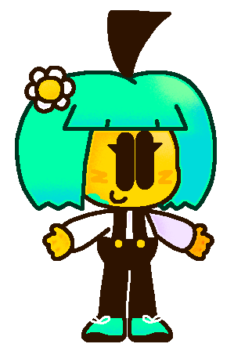

About Me
This is my silly sona
My pronouns are She/They
I'm 14 years old
I like a lot of different things!
I can be kinda annoying and stupid so yeah sorry for that
I'm an introvert
I'm pretty shy sooo I do less talking more image sending
My favorite food is pizza (i have an entire folder for pizza pics)
My zodiac sign is Taurus
I have a 100% save file in Rayman Origins here's proof
I have a boyfriend who i love very much <3
I tried sleeping to the Hong Kong 97 theme once